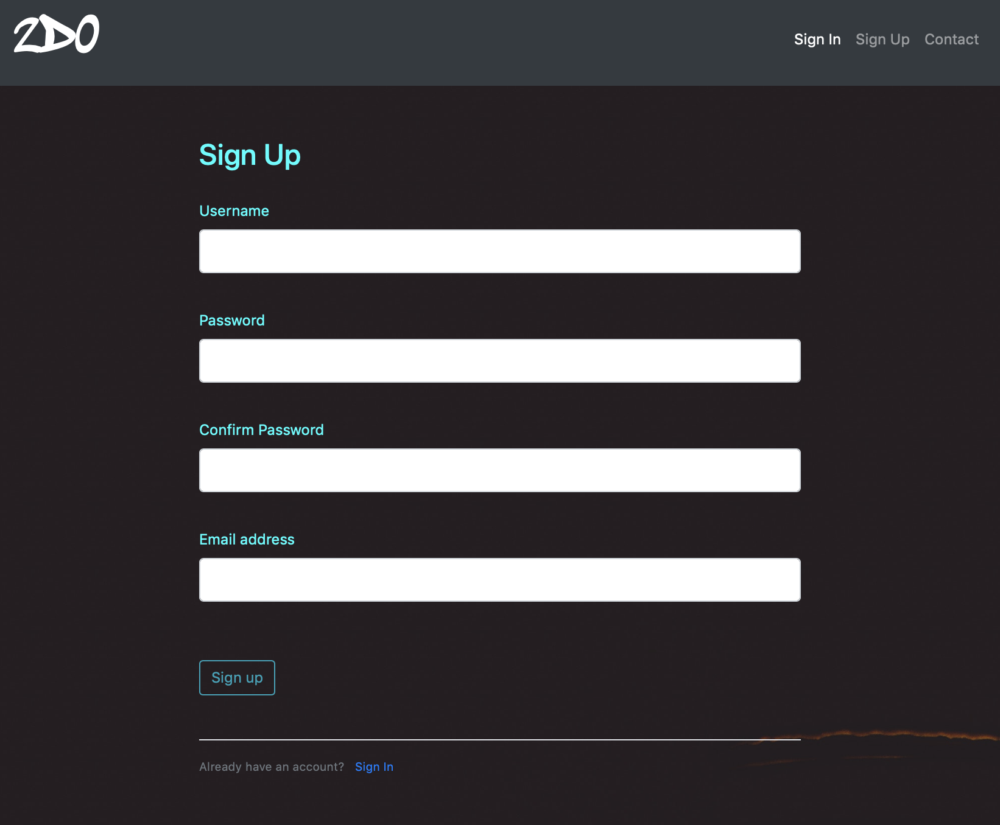
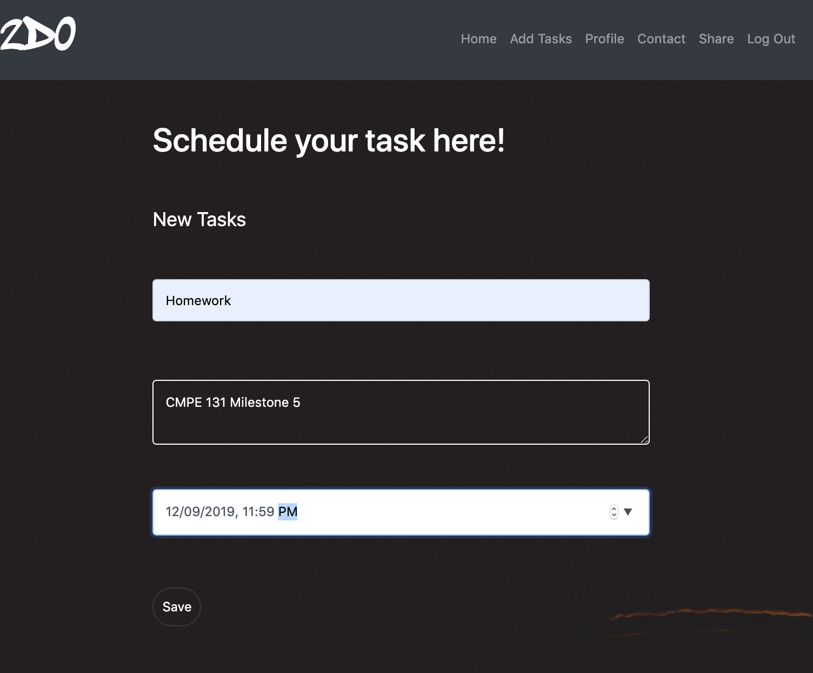
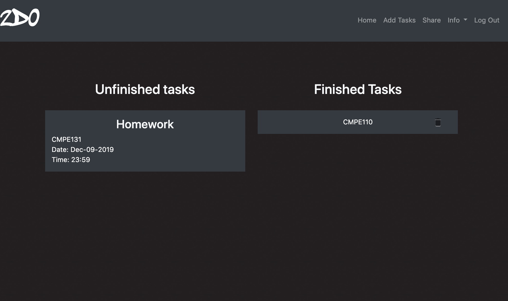
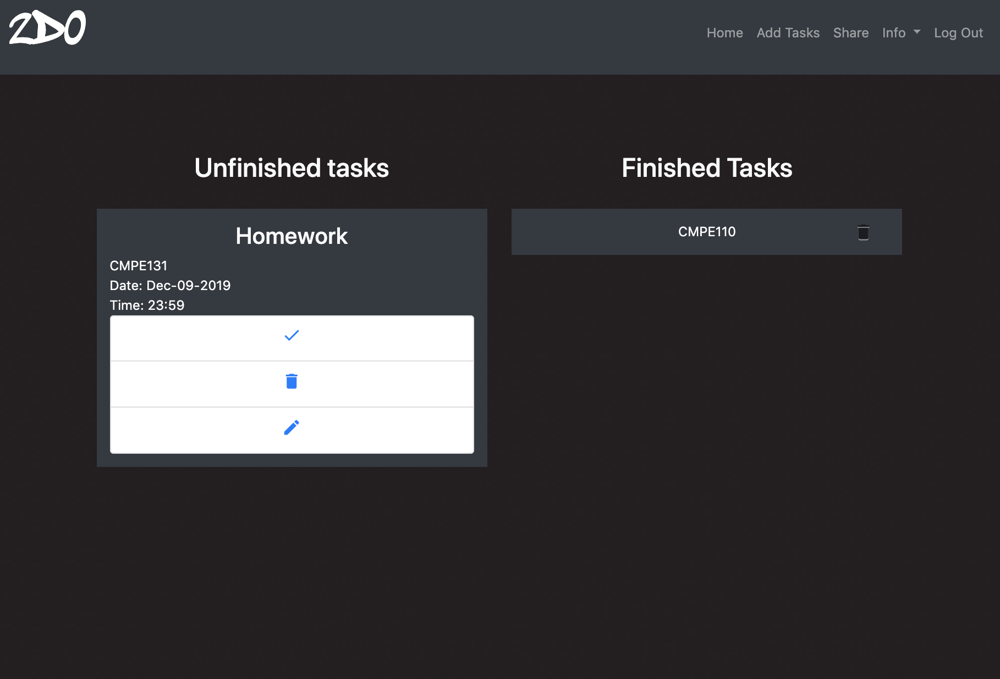
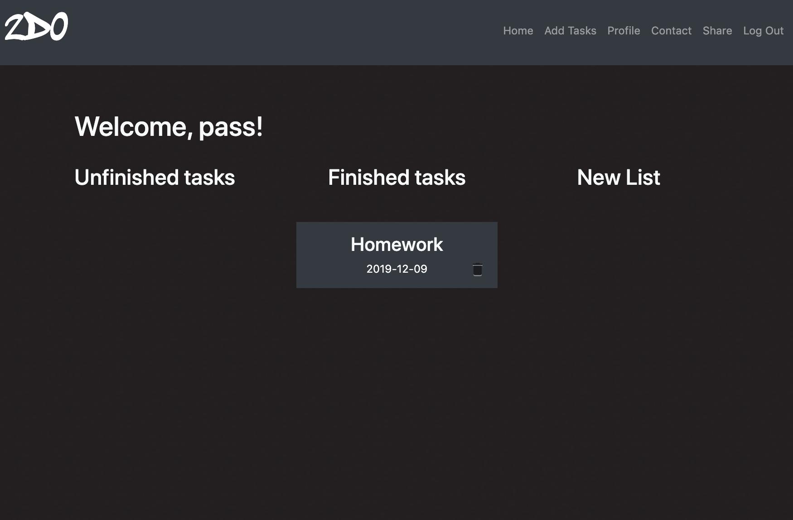
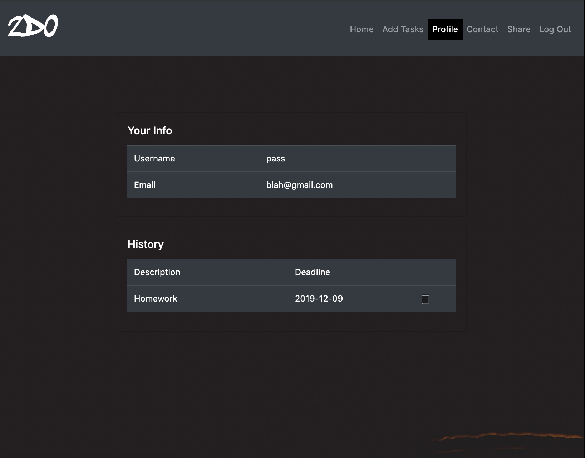

Welcome to 2Do’s documentation!¶
2Do is a task management application, which will allow users to manage their daily task with ease. The app will allow users to enter their daily tasks, set notification timings, create new to do lists, and share their tasks with other 2Do users! Our hope is that managing your daily schedule becomes easier.
Required Package
python3
Flask
Flask-Heroku
Flask-Login
Flask-SQLAlchemy
Flask-WTF
Gunicorn
SQLAlchemy
Sphinx
Flask-mail
WTForms
Using 2Do:
Registering
New users can click SignUp from the navigation bar and will directed to this screen
Sign In
Users can login from the SignIn page as shown below.

Add Tasks
Users can add new tasks, by clicking on the add task from the navigation bar
Home Page
New Tasks are added to the Unfinished Task List
Edit Tasks
Clicking on the task header will allow you the user to finish, delete, or edit a task
Edit redirects you to this page

Finished Tasks
Once the user is done with a task, they can click on the check mark to move the task to the finished task list
Profile
Each user has a profile which they can access from the Info in the Navigation Bar.
Share
Users can share their 2Do lists with friends by email. An email will then be sent containing a PDF of their unfinished tasks. Users must click on the Share header as shown below

Contact
Users can contact admin support and our admin email will receive an email with the users complaints

- caption
Contents: